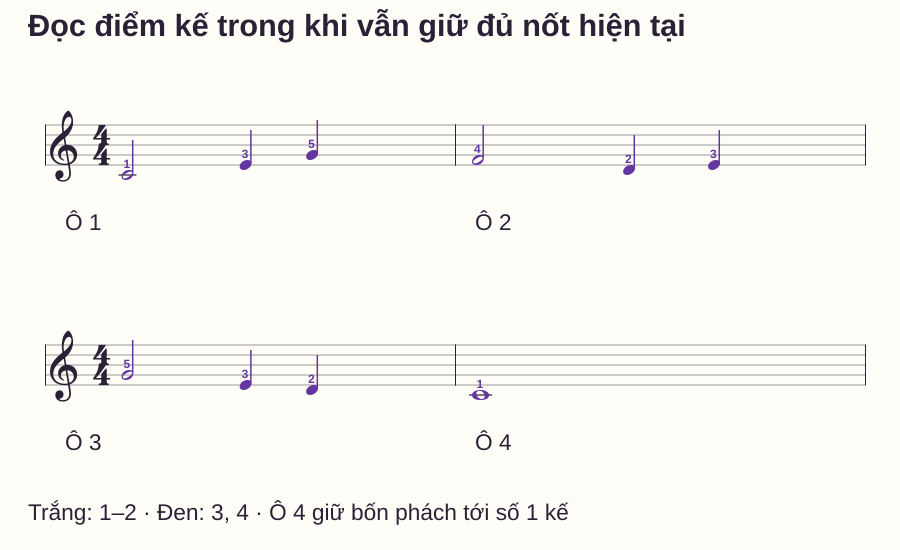
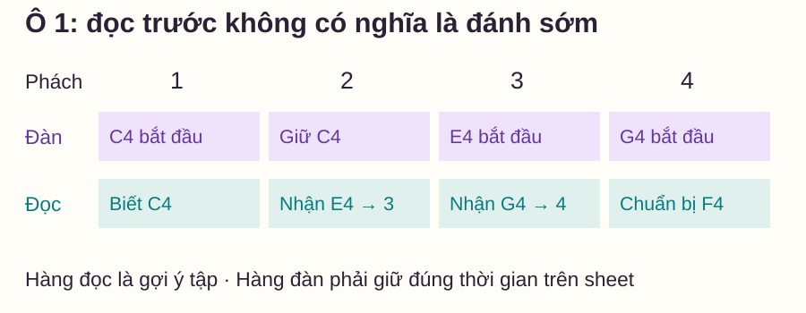
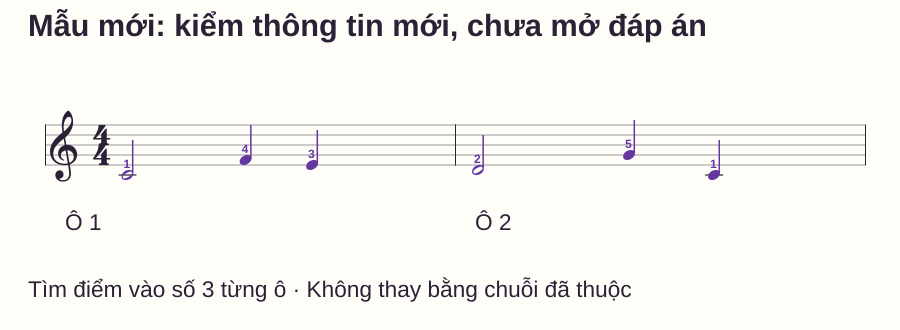

Đọc nhạc
Đọc trước nốt tiếp theo khi chơi piano: tập từ câu ngắn
# Đọc trước nốt tiếp theo khi chơi piano: tập từ câu ngắn
Bạn chơi xong một nốt rồi mới tìm nốt tiếp theo. Mỗi tiếng riêng đều đúng nhưng giữa chúng có khoảng chờ. Lời khuyên “hãy nhìn trước” nghe đơn giản, nhưng nếu mắt đi xa quá, bạn lại quên nốt đang giữ hoặc vào sớm nốt kế.
Trong bài này, bạn sẽ dùng các nốt trắng làm chỗ tập nhận nốt sắp tới trong khi ngón vẫn giữ đủ hai phách. Câu nhạc chỉ có một bè, nằm trong C4–G4. Có mẫu mới ở cuối để phân biệt việc nhận thông tin trên sheet với việc lặp lại câu đã thuộc.
Trả lời nhanh
Đọc trước khi chơi piano là nhận thông tin cần cho điểm vào kế tiếp trước khi phải đánh nó. Bắt đầu bằng một nốt hoặc nhóm ngắn: biết cao độ, trường độ và ngón cần dùng, rồi chuyển mắt khi nhiệm vụ hiện tại đã rõ. Trong mẫu này, khi giữ nốt trắng hai phách, thử nhận nốt kế nhưng vẫn chờ đúng phách mới đánh. Không có khoảng nhìn trước cố định một ô cho mọi đoạn nhạc. Nếu bạn nhả sớm, mất nhịp hoặc quên vị trí, thu nhiệm vụ còn một điểm đến và giảm tempo; sau đó kiểm lại bằng mẫu khác cùng mức.
Đọc trước khác với nhìn qua mà chưa biết sẽ chơi gì
Một lần nhìn có ích cần mang về thông tin: nốt nào, ở vùng nào, bắt đầu ở phách nào và dài bao lâu. Nếu mắt đã tới ô sau nhưng bạn chưa xác định được nốt kế, khoảng nhìn xa chưa giúp tay chuẩn bị.
Tài liệu Schott — Piano Junior Sight Reading Level 2 nhắc kiểm khóa/nhịp, nhận mẫu lặp và nhìn tới nốt kế. Bài này chọn một nhiệm vụ nhỏ từ nguyên tắc ấy, không yêu cầu làm theo toàn bộ lịch luyện hoặc tempo trong tài liệu.
Bạn cũng cần thời gian xem sheet trước khi chơi. Trinity College London — Musicianship & technical exercises khuyến khích chuẩn bị bằng cách nhìn bản nhạc trước lượt đọc. Chuẩn bị đầu lượt và đọc trước trong lúc đang đàn là hai thời điểm khác nhau; có thể tập từng việc riêng.
Chọn mẫu đủ nhẹ để dành chú ý cho nốt kế
Dùng tay phải với ngón 1–5 trên C4–D4–E4–F4–G4; C4 là Đô giữa. Sheet không có hóa biểu hoặc dấu hóa, không đổi vị trí tay và chưa thêm tay trái. Bạn vẫn được nhìn xác nhận vị trí đặt trước lượt chơi.
Nếu hiện tại phải đếm dòng cho mỗi nốt C4–G4, hãy ôn nốt mốc và khoảng cách trước. Lần tập đọc trước này không nên đồng thời là lần đầu học khóa Sol, đổi thế tay và ghép hai bè.

| Ô | Nốt đang bắt đầu ở số 1 | Điểm vào số 3 | Điểm vào số 4 |
|---|---|---|---|
| 1 | C4 trắng, ngón 1, giữ hai phách | E4 đen, ngón 3 | G4 đen, ngón 5 |
| 2 | F4 trắng, ngón 4, giữ hai phách | D4 đen, ngón 2 | E4 đen, ngón 3 |
| 3 | G4 trắng, ngón 5, giữ hai phách | E4 đen, ngón 3 | D4 đen, ngón 2 |
| 4 | C4 tròn, ngón 1, giữ bốn phách | Vẫn giữ C4 | Vẫn giữ C4 |
Bước 1: đọc trước lượt chơi
Chỉ khóa Sol, số chỉ nhịp 4/4, nốt đầu và nốt cuối. Nhận ba ô đầu cùng hình trường độ, nhưng các cao độ khác nhau. Đừng vì thấy hình nhịp lặp mà chơi lại nguyên cao độ ô 1.
Đếm “1–2–3–4”, gõ nốt trắng ở 1 rồi giữ ý thức qua 2; gõ hai nốt đen ở 3, 4. Với ô 4, chỉ một điểm bắt đầu ở 1 và giữ đủ tới số 1 tưởng tượng của ô sau. Việc mắt đã đọc xong câu không làm âm kết thúc sớm.
Bước 2: một điểm nhìn trước trong ô 1
Xác định C4 và E4 trước khi thử. Bấm C4 ở số 1. Trong lúc giữ C4 qua số 2, thử nhìn E4 kế tiếp và xác định nó bắt đầu ở số 3. Khi tới 3 mới đánh E4; nhìn thấy E4 sớm không có nghĩa đánh sớm.

Đầu tiên chỉ thử cặp C4 trắng → E4 đen, sau đó hoàn thành ô với G4. Nếu bạn giữ được C4 nhưng chưa đọc kịp E4, giảm tempo hoặc đọc rõ hai nốt trước lượt. Nếu bạn đánh E4 ngay khi nhìn thấy, tập lại lời “đọc bây giờ, đánh ở 3”.
Không cần nói to mọi tên nốt trong khi đang chơi đủ câu. Nói tên có thể dùng ở lượt phân tích; lượt đàn có thể chỉ đếm phách để giảm nhiệm vụ cùng lúc.
Bước 3: đi qua vạch ô mà không quay lại đầu
Sau ô 1, đích là F4 trắng ở đầu ô 2. Bạn cần biết đích trước điểm vào ấy, không chỉ tìm tên sau khi đã đánh G4 xong. Khi mới tập, học rõ cặp G4 cuối ô 1 → F4 đầu ô 2 trước, sau đó nối cả hai ô.
Thử một lượt chậm để nhận các điểm tiếp theo. Nếu có lỗi, ghi vị trí rồi tách lượt sửa. Một lượt đọc liền dùng để quan sát nhịp và chuyển tiếp; một lượt sửa được phép dừng để xác định lại. Không bắt bản thân chạy tiếp khi đã hoàn toàn mất vùng hoặc không biết mình đang ở ô nào: dừng, đặt lại và chọn đoạn ngắn hơn.
Tới ô 4, giữ C4 đủ bốn phách. Đây cũng là một phép kiểm: khi không còn nốt để nhìn tiếp, bạn có giữ đủ âm cuối hay tự rút ngắn để kết thúc bài?
Mẫu mới: bạn đọc được hay đang nhớ chuỗi cũ?
Mẫu hai ô dưới vẫn dùng vùng C4–G4 và hình nhịp trắng–đen–đen, nhưng thứ tự cao độ khác. Trước khi chơi, tự tìm nốt đầu, hai điểm vào số 3 và nốt cuối. Đừng dùng bảng đáp án phía dưới làm nguồn thay cho sheet.

Đáp án và câu hỏi tự kiểm
Ô 1: C4 trắng 1, F4 đen 4, E4 đen 3. Ô 2: D4 trắng 2, G4 đen 5, C4 đen 1. Điểm vào số 3 lần lượt là F4 và G4, không phải E4 và D4 như hai ô đầu của câu mẫu. Giữ nốt trắng tới số 3; không nhả ở 2. Cuối ô 2, C4 chỉ dài một phách, tới số 1 tưởng tượng ô 3 thì nhả.
Bạn có thể ghi hai loại kết quả: đọc đúng cao độ/điểm vào, và giữ đủ độ dài. Không dùng cảm giác “mắt đã nhìn xa” thay cho các kết quả nghe được ấy. Mẫu mới cùng mức giúp kiểm chuyển giao, nhưng một lần đúng chưa chứng minh đọc liền mọi sheet.
Lỗi thường gặp và cách thu nhỏ nhiệm vụ
| Hiện tượng | Điều có thể đang xảy ra | Thử sửa |
|---|---|---|
| Thấy nốt kế là đánh ngay | Trộn đọc với điểm bắt đầu | Chỉ một cặp trắng→đen, đếm đủ 1–2–3 |
| Nhìn ô 3 rồi quên đang ở ô 1 | Khoảng nhìn trước quá lớn cho mẫu | Thu về một điểm vào kế |
| Cứ quay về nốt đã đánh | Chưa chắc nốt/vùng hoặc điểm tiếp | Đọc và đặt lại cặp đó trước lượt |
| Sang mẫu mới vẫn chơi nốt cũ | Dùng trí nhớ thay thông tin mới | So cao độ tại số 3, gọi trước khi đàn |
| Qua vạch có khoảng chờ | Đích đầu ô chưa được chuẩn bị | Học cặp cuối ô–đầu ô, rồi nối lại |
Routine mười phút và khi nào mở rộng
- 0–2 phút: kiểm khóa/nhịp/vùng, gõ hình trắng–đen–đen.
- 2–4 phút: thử ô 1, nhận E4 trong khi giữ C4.
- 4–6 phút: nối ô 1–2, kiểm đích F4 qua vạch.
- 6–8 phút: chơi cả câu và giữ đủ C4 cuối.
- 8–10 phút: đọc mẫu mới trước đáp án, ghi một loại lỗi.
Mở rộng khi giữ đúng thời gian, xác định được điểm vào kế trước khi tới nó và đọc được mẫu mới không thay bằng chuỗi cũ. Mở rộng một yếu tố: thêm ô, thêm nốt ngắn hoặc thêm một bè, thay vì tăng cả ba cùng lúc. Đây là điều kiện tự kiểm của bài, không phải tiêu chuẩn thi hay dự đoán tiến độ học.
Đọc thêm
Nốt mốc piano hỗ trợ xác định cao độ. Bước liền và bước nhảy giúp nhận quan hệ giữa các điểm. Cách đọc nốt nhạc piano ôn các lớp thông tin trước lượt chơi.
Câu hỏi thường gặp
Phải nhìn trước đúng một ô nhịp không?
Không có khoảng cố định cho mọi đoạn. Bắt đầu bằng điểm vào kế đủ nhỏ để vẫn biết nhiệm vụ đang thực hiện, rồi thay đổi theo độ dày và độ khó của nhạc.
Có cần giữ mắt hoàn toàn khỏi bàn phím không?
Không cần ép như vậy. Chuẩn bị vùng tay trước, nhìn xác nhận khi cần và biết điểm trở lại sheet. Bài hiện tại giữ một vùng hẹp để giảm việc tìm phím.
Tập đi tập lại câu này có còn là thị tấu không?
Nó trở thành bài luyện đọc quen và phối hợp thời gian. Để kiểm đọc mới, dùng một mẫu chưa luyện cùng mức; đừng gọi lần chơi thuộc là kết quả thị tấu.
Sai thì nên dừng hay đi tiếp?
Tùy mục tiêu lượt tập. Lượt đọc liền quan sát khả năng duy trì, rồi sửa riêng sau; lượt học nốt được dừng. Khi mất hẳn vị trí, đặt lại để tập phần nhỏ có nghĩa.
Có nên che phần nhạc vừa chơi không?
Chưa cần trong mẫu này. Trước hết xác định được điểm kế mà vẫn giữ đủ âm hiện tại. Thêm công cụ che có thể làm tăng nhiệm vụ và cần điều chỉnh theo người học.
Có thể thêm tay trái ngay không?
Chỉ sau khi nhiệm vụ đọc/giữ ở một bè đã rõ. Thêm trái cần một mẫu ghi đủ nốt và thời gian của trái; không tự mặc định trái phải đánh cùng mọi tiếng phải.
Nguồn và ghi chú biên soạn
- Schott — Piano Junior Sight Reading Level 2: kiểm trước lượt, nhận mẫu và nhìn nốt kế. Không chép sheet hoặc áp lịch luyện của tài liệu.
- Trinity College London — Musicianship & technical exercises: chuẩn bị tinh thần qua việc xem nhạc trước khi chơi. Kiểm ngày 27/10/2026.
- Các câu nhạc, lưới, routine và phép tự kiểm là thiết kế riêng, chưa có giáo viên độc lập review hoặc thử nghiệm học viên. Không khẳng định một cách di chuyển mắt phù hợp mọi người.